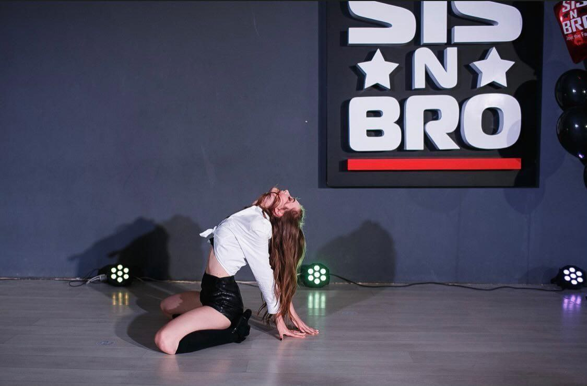

Despre
Dansul este o artă, prin dans poți împărtăși celorlalți ceea ce simți. Multă lume spune că a dansa este simplu, dar ei se referă la coregrafie și nu la dans în sine, adevăratul înțeles al dansului se reflectă în emoțiile pe care le transmitem atunci când dansăm, mesajul pe care îl facem cunoscut celor din jurul nostru. Fiecare dans are povestea lui și fiecare ne povestește câte ceva. Dansul este limbajul ascuns al sufletului!
Experienta
Am început dansurile în luna Februarie a anului 2020. Frecventam de 2 ori pe săptămâna (miercuri și sâmbătă). Am practicat mai multe stiluri de dans: high heels, hip hop, vogue, dancehall female, etc. A fost o experiență minunată, întrucât am făcut cunoștință cu persoane noi, am participat la diferite concursuri, videoclipuri profesionale și open air-uri
Cerinte
Pentru a frecventa acest tip de sport este necesar sa aveți o elasticitate perfectă a corpului, să fiți permanent motivați, responsabili, să acceptați fiecare idee sau mișcare neobișnuită. Dansul poate fi practicat la orice vârstă!
Beneficii
Dansul este o activitate sportivă plăcută, iar la copiii care îl practică se pot observa îmbunătățiri semnificative în sănătatea lor. Acesta contribuie la creșterea flexibilității corpului, diapazonului de mișcări, forței fizice și rezistenței. Mișcările repetitive din care este format dansul contribuie la tonifierea mușchilor și corectarea posturii coloanei vertebrale. Cursurile de dans contribuie la dezvoltarea abilităților sociale și de comunicare. La fel ca în orice alt sport pentru a obține rezultate este nevoie de disciplină, concentrare și exercițiu. Aceste abilități sunt utile pe tot parcursul vieții. Sistemul după care au loc lecțiile de dans presupune reținerea pașilor, mișcărilor, părților și combinațiilor ce este un bun exercițiu intelectual, în special pentru memorie. este binevenită practicarea acestui tip de sport!